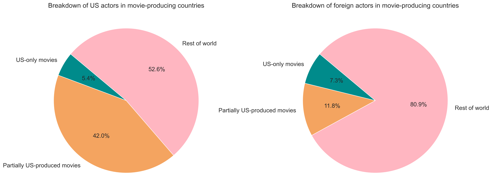
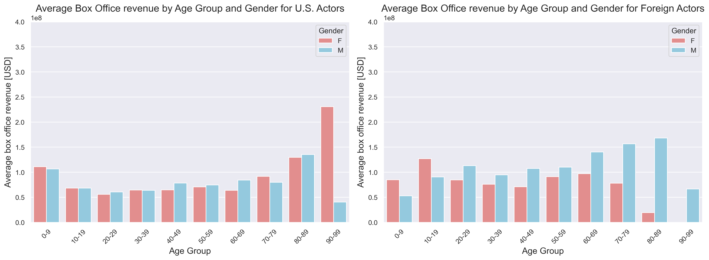
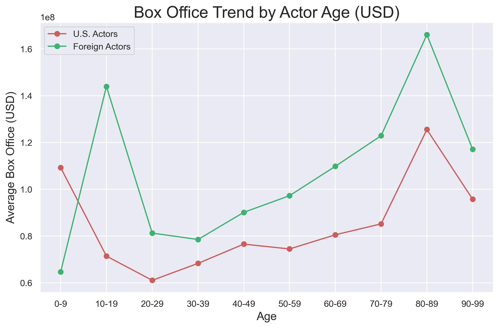

Actors analysis

- By: Chloé Bouchiat, Germana Sergi & Marlène Stöckli
Many actors and actresses have had more or less successful careers in their lifetime. In fact, the CMU dataset contains information on more than 450 000 actors and actresses. But probably just a few of them are known on a larger scale. Are the known ones Americans or actors playing in American films? To understand, to what extent the US influences the global cinema industry (and thus maybe our minds… ATTENTION ATTENTION), the following analysis is dedicated to the career of American actors and actresses compared to the non-American ones.
Actors nationalities
Importing actors nationalities
First of all, the CMU dataset does not contain information about the nationality of the actors and actresses. To conduct the planned analysis anyways, we created a function for a SPARQL query which scraps Wikipedia pages using DBpedia to extract the nationality of the actors in the dataset. More precisely, the query adds to the dataset the nationality “American” if the actor is from the US and it adds “Other” as nationality if this is not the case. This procedure enriches the CMU dataset for the character metadata with the nationality and enables us to depthen our analysis.
The percentage of American actors in the CMU dataset is about 36% (absolute value: 161'386 actors), whereas 33% (absolute value: 146’768 actors) of the actors are coming from “Other” countries. The remaining 31% don’t contain any information about nationality after the Wikipedia scraping, which means, they contain NaN values. This high percentage of NaN values is not favorable for the exploration of our research questions but we can still use nationality for further analysis.
Exploring how the two groups, American and non-American actors, look like, we group by nationality and inspect the distribution of age and proportion of gender. Those variables will serve for our in-depth study and we need to verify if the distributions/proportions are similar between the two partitions of the dataset. If not, we would need to account for the difference when analyzing and drawing conclusions on the data. With a first simple data exploration, focusing on our main variables of interest (nationality, age, gender), we find that the distribution of age and gender is similar for both American and non-American actors. This finding is reassuring for our further analysis that both groups are comparable in their features. The gender ratio (female to male) is 0.53 and 0.51 for American and non-American actors respectively. Furthermore, the age distribution seems to follow a normal law, slightly right-skewed, - an interesting insight that we will explore later on. Again we find an allegedly impressive domination of the US in movie casts. But we have to stay cautious since the high employment of American actors for movies worldwide might come from the fact that a high ratio of movies are produced in the States and therefore might cast preferentially American actors.
Actors nationalities following movies origin
Going a little bit deeper in the analysis, we explore data proportions taking into consideration both actor nationality and film origin. This step will serve to disentangle the links between both variables. We specifically focus on those two variables to assess the influence of the movie origin on an actor's career (and success) and the factors (like actors’ nationality) that might affect this link. The outcome is mirroring our expectations for the foreign actors. Indeed, Foreign actors are mostly playing in foreign movies. On the other hand, American actors are playing as much in movies with US origin (including both only US and partially US) as in movies not originating from the US. Interestingly, American actors don't play that frequently in US-only movies.
As the dataset contains roughly the same number of US and Foreign actors, we can deduce from this that US actors are more often exported to the rest of the world than Foreign actors are imported to the US, i.e. we have a net flux of actors exporting from the US to the rest of the world - from a movie making perspective. In a later step, we will also put those figures in relation to the pie chart showing the fraction of movies per origin.
Actors' career
Which kind of actor plays in which kind succesful movies ?
Good, the dataset seems balanced. Nice. And in our dataset, we have approximately as many American actors as foreign actors but this is not yet containing any evidence about the predominance of America in global cinema through American actors. If these actors play in movies, which don’t have any popularity and are not watched by a large audience, the actors can’t have any influence on the global film industry. That’s why we inspect which actors play in successful films in terms of box office revenue. Specifically, we want to see if foreign actors typically play in movies with higher box office revenue than American ones.This procedure will provide a first overview, but later on we will examine the success of actors based on more features, and therefore more broadly supported.
Having checked the balance of the dataset, we now analyze both groups of actors - American and foreign actors - in terms of the box office revenue of the movies produced in the US and produced in the rest of the world. When looking at the results for the basic statistical values, we focus our comparison on the median since the data is right skewed. American actors play in American movies with median box office revenue of 18 million USD and in non-American movies with median box office revenue of 9 million USD. Meanwhile, Foreign actors play in American movies with median box office revenue of 21 million USD and in non-American movies with median box office revenue of 7 million USD. For both Foreign & American actors, it seems that playing in American movies (either partially or only US produced) generates a higher median box office revenue, compared to playing in movies produced in the rest of the world. Also, it looks like actors playing in movies of a different origin than theirs (that is, American actors playing in rest of the world movies and vice versa) are associated with higher median box office revenues. Finally, movies co-produced by the US have, for both nationality groups, the highest revenues among all movie origins. However, in the case of co-produced movies, American actors play in movies with higher box offices (so "more successful" movies) than foreign actors. In conclusion, no clear trend can be identified regarding whether an actor's origin influences their likelihood of being cast in a successful movie.
Does gender matter ?
The analysis of gender distribution among U.S. and foreign actors reveals a similar pattern across all three movie origin groups: female actors represent about 30%, while male actors account for roughly 60%. Interestingly, the gender imbalance is more pronounced in strictly U.S. movies, particularly among U.S. actors compared to foreign actors. Given that all movie origins show the same distribution, does this pattern stem from movies produced in America? While the present analysis cannot answer this question, it does add a twist to the conspiracy theory.
Gender differences in casting may also relate to box office revenue, beyond the production country. Since the focus remains on America’s influence, we analyzed gender representation in box office revenue across age groups.
For foreign women, films with lower box office revenue dominate across all age groups older than 20, contrasting with men. This trend does not hold for American actors, where men only appear slightly more often in higher-revenue films in the 10–69 age range.
For both nationalities, the oldest actors see very high revenues. These anomalies may stem from the small number of older actors, who are likely skilled performers cast in successful films. Highly successful actors are also more likely to remain in the industry later in life than their less successful counterparts."
Influence of nationality on actors' career
Is an early career more likely for American actors ? And does American nationality helps kicking off actors' careers?
For now, the results of the analysis are rather relieving and speak against the conspiracy theory. Phew! But we want evidence so we’re not yet at the end of the analysis. What if the career start of actors depends on their nationality? Let’s explore if it helps to kick-off an acting career when being American. For this purpose, the career of an actor is defined as the number of movies played in whereas an early career is defined as an actor playing the first time in a movie before the age of 18.
In general, looking at the age variable, the metrics confirm that we have very similar age distributions following the actors’ nationalities (similar mean, median, std, max, min for both nationalities). What we see is that US actors are generally younger if casted in US movies (and even younger if the film is only produced in the US). The contrary is true for Foreign actors, who are on average younger in non-US produced movies.
To answer our question, we then looked at the percentage of actors acting in a movie before this age and we confirmed that US actors are more inclined to having an early career in all movie producing countries, with a significant difference in US only produced movies (9.14% of US actors vs 4.5% of foreign actors having an early career). The box office trend by actor age (Fig) also suggests that these early birds also get the best movies if they are American! To understand whether early careers actually helped US actors in kicking off their careers, we did a further analysis by computing the correlation coefficients between the age at the first movie and the total number of movies for each actor.
We obtained in both cases negative correlation coefficients, meaning that an earlier starting is indeed related to a richer career in terms of number of movies played.
Does acting in an US movie help in kicking off the acting career?
Now we want to investigate how much acting in a US movie counts on actors' CVs. To do so, we compute, for each actor, the mean IMBd ratings of films in which they act before and after acting in their first (strictly) US movie. The results are clear: 94.45% of the actors saw an increase of the average rating after acting in a US movie. So suggestion: if you are an actor looking for work opportunities, why not cheat in your CV by adding a role in a US movie ;)
Career stereotypes
I know I know, if you arrived at this point you just want to see the famous Actor Success Index (ASI) . We promised to have answers about the conspiracy theory, but we have one more step to go. We were curious to know about possible stereotypes of actors casted for different movie origins, so we decided to look for clusters in career types based on career length, number of movies and age at first movie.

The analysis gave us 5 interesting clusters that we interpreted, by looking at the centroids, as follow:
Cluster 0: "The One-Hit Wonder" — A brief but impactful appearance before disappearing.
Cluster 1: "The Marathoner" — A relentless actor in it for the long haul.
Cluster 2: "The Shooting Star" — A bright spark that burned out too soon.
Cluster 3: "The Late Bloomer" — Got in the game late but left their mark.
Cluster 4: "The Child Prodigy Turned Legend" — Started young, stayed strong, and never left the spotlight.
We can see that “The One-Hit Wonder” is definitely the favourite type of career for the two groups of actors, although foreigners strongly prevail, maybe not realising that this might be an unsuccessful type of career. Contrairly, a successful path seems to be the fourth cluster, although hard to get, but in which, guess what, Americans prevail!
Actors success index (ASI)
We are finally at the end of our investigation. Given the findings above, we collected all the information that appeared important to define an actor’s career and we used it to predict a success index. But how could we prove globally the success of an actor? We decided to look at the results of the most famous film awards in the world: the Golden Globes. It is an annual award ceremony held since 1944 to honor artists and their works. In particular, based on the nominations and the results of each year, the points for theGolden Globe index (our ‘ground truth’) were assigned as follow: 0 points if never nominated; 1 point if at least once nominated; 2 points if at least once won; 3 points if more than once won.
An ordered regression model was used to predict the success index using the Golden Globe index as target and the following features were fitted as dependent variables: gender of actor, height of actor, age at first movie, number of movies played, number of famous movies played and career’s length. Before fitting the model, the dataset was downsampled to balance the significantly bigger number of actors having Golden Globe index of 0. The final fit gave an accuracy of 85.25% on the test set and presented the following coefficients:
| Weights | Standard error | |
|---|---|---|
| Height | 0.1636 | 0.004 |
| Age for the actor's first movie | -0.0276 | 0.006 |
| Total number of movies | 0.2079 | 0.004 |
| Career length (based on actor age) | 0.0332 | 0.004 |
| Number of famous movies | 0.1186 | 0.002 |
| Female | -0.0509 | 0.007 |
| Male | 0.0720 | 0.007 |
The same model is then used to make predictions on the full dataframe and the following predictions were obtained for the US vs non-US actors. **table or/and violin plot**

We can state that the Americans seem to hold again the podium of success. But the rest of the world stayed on their heels this time! Indeed, the average indices of the two groups are really close. However, we have to admit that this is not a bad result for the Americans, since they are being compared in average to the actors of ALL THE COUNTRIES of the rest of the world.